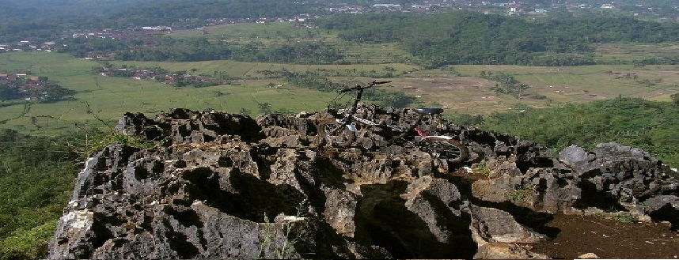
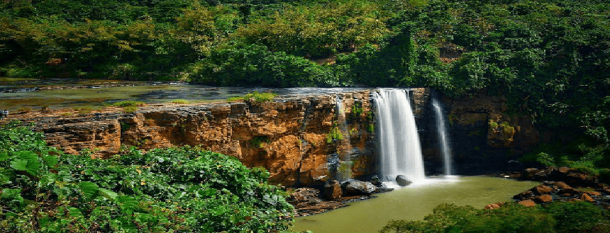
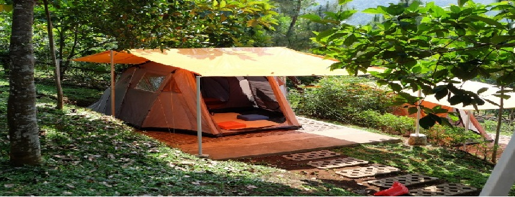
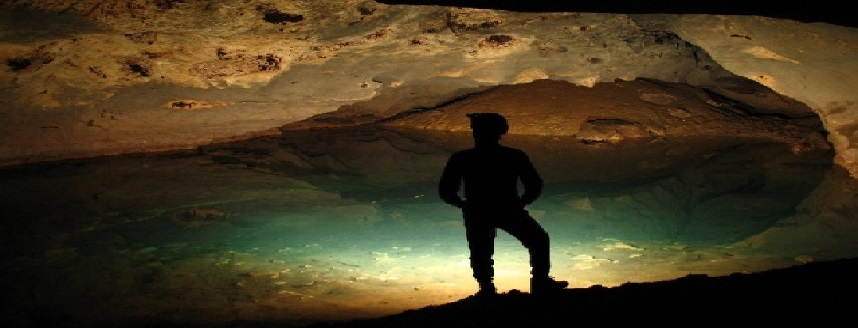
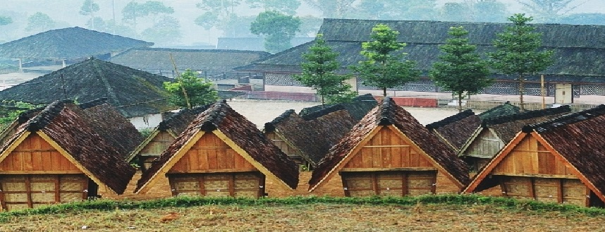
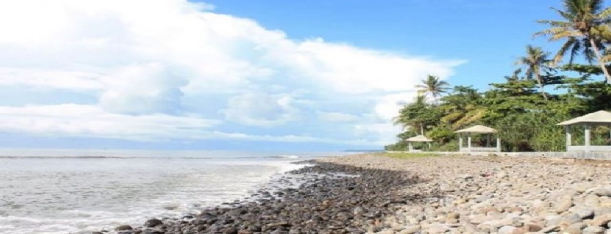
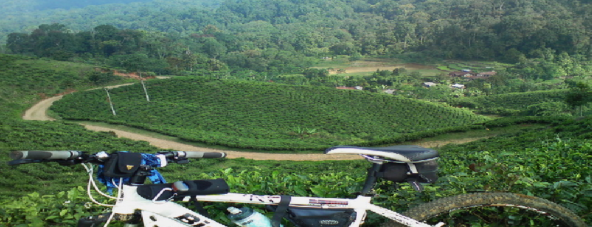
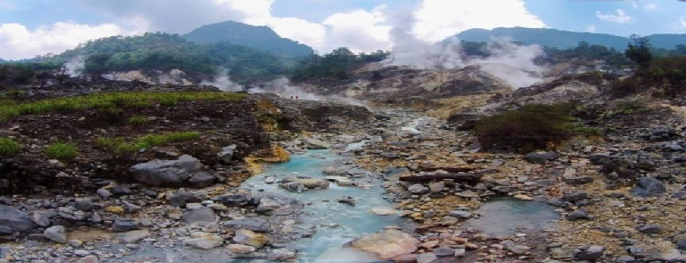
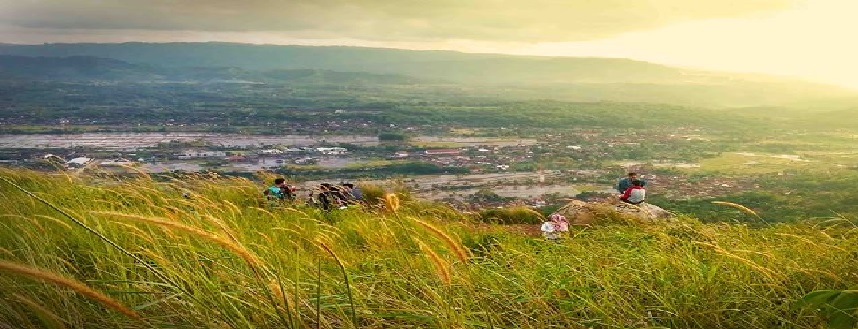
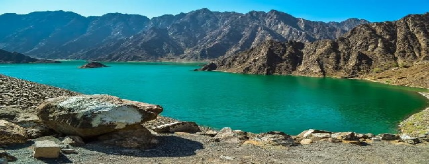

Dikenal sebagai salah satu wilayah di Jawa Barat, Sukabumi ternyata menyimpan berbagai potensi wisata yang sangat menakjubkan, mulai dari keindahan alam hingga berbagai tempat sejarah yang layak untuk dikunjungi bagi Kamu penggila aktivitas jalan-jalan. Hal inipun juga didukung dengan kondisi alam yang cenderung asri, sejuk dan pastinya sangat cocok untuk dijadikan referensi liburan akhir pekan bersama keluarga. Untuk itu, banyak wisatawan yang berkunjung ke tempat wisata di Sukabumi di akhir pekan ataupun saat libur panjang.
Banyaknya tempat wisata di Sukabumi ini juga disebabkan oleh adanya topografi daerah yang di kelilingi pegunungan indah. Tidak hanya itu saja, di tahun 2018 ini, Sukabumi menawarkan berbagai tempat wisata unik dan menarik yang pastinya Instagramable. Tidak mengherankan jika diakhir pekan ataupun libur panjang, banyak wisatawan yang berkunjung ke kota ini.
Berikut ini beberapa tempat wisata di Sukabumi yang sedang hits dan wajib dikunjungi para travelers.

#1 - Bukit Karang Para

#2 - Curug Awang

#3 - Bravo Adventure

#4 - Gua Buniayu

#5 - Kampung Ciptagelar

#6 - Pantai Cimaja

#7 - Gunung Halimun

#8 - Kawah Ratu

#9 - Karang Numpang

#10 - Danau Bacan
#1 Bukit Karang Para
Basabasi.co
Jika Kamu ingin mendapatkan spot menarik dan pastinya Instagramable, jangan lupa untuk singgah di Bukit Karang Para yang berlokasi di Desa Kebun Manggu, Kecamatan Gunung Guruh, Sukabumi. Tempat wisata di Sukabumi yang satu ini menawarkan keindahan alam yang bisa dinikmati dari ketinggian tertentu. Menariknya lagi, di lokasi wisata ini juga terdapat jembatan kayu yang posisinya menjorok ke jurang dan sering dijadikan sebagai spot berfoto.
#2 Curug Awang
blog.reservasi.com
Jalan-jalan ke air terjun Niagara kini bisa Kamu lakukan dengan berkunjung ke Desa Tamanjaya, Kecamatan Ciemas, Sukabumi. Disini, Kamu bisa menikmati keindahan alam air terjun Niagara mini yang konon memiliki ketinggian 40 meter. Dengan hanya membayar tiket masuk sebesar Rp 3,000, Kamu bisa menikmati tempat wisata di Sukabumi yang satu ini sembari mengabadikan moment terindah bersama teman ataupun pasangan.
#3 Bravo Adventure
bravoadventure.com
Akhir pekan memang lebih mantab jika dihabiskan dengan berkemah dengan cara glamor. Tidak perlu berburu hewan untuk makan atau mencari kayu lagi. Sebab di tempat wisata di Sukabumi yang dikenal dengan sebutan Bravo Adventure ini, Kamu akan disediakan dengan berbagai perlengkapan yang menunjang. Bahkan, ada juga kegiatan outbound yang sangat mengasyikkan dengan hanya membayar Rp 500,000an saja. Sangat menarik bukan?
#4 Gua Buniayu
Dikenal sebagai gua yang paling indah se-Asia Tenggara, gua Buniayu sudah sepantasnya masuk dalam daftar destinasi tempat wisata di Sukabumi yang wajib Kamu kunjungi saat ada di Sukabumi. Dibuka mulai pukul 08.00 – 22.00, Kamu akan ditemani oleh pemandu wisata profesional dengan hanya membayar Rp 15,000 saja. selama eksplorasi, Kamu akan diajak untuk menjajaki 2 dari 3 gua yang sangat indah, sebab gua kretek yang ada di dalamnya khusus untuk mereka yang profesional ataupun peneliti.
Terbentuk dari lempengan tektonik selama berjuta-juta tahun yang lalu, gua Buniayu ini menyuguhkan pemandangan fosil pada dinding gua yang sangat mengagumkan. Untuk menjelajahi gua, Kamu harus melewati medan yang berlumpur maupun berbatu dan memakan waktu selama kurang lebih 5 jam. Dengan mengunjungi tempat wisata di Sukabumi ini, liburan Kamu pastinya akan lebih mengesankan dan bermakna.
#5 Kampung Ciptagelar
Berwisata sembari belajar memang sangat mengasyikkan dan ini bisa Kamu lakukan dengan mengunjungi tempat wisata di Sukabumi yang dikenal dengan nama Kampung Ciptagelar. Sebuah kampung yang sarat akan nilai tradisi dan budaya zaman dahulu ini ada di Desa Sinaresmi, Kecamatan Cisolok, Sukabumi. Di sini Kamu akan melihat berbagai aktivitas masyarakatnya yang masih menganut kepercayaan leluhur zaman dahulu.
#6 Pantai Cimaja
Untuk Kamu yang memang suka dengan aktivitas berselancar, kini saatnya Kamu segera meluncur ke Desa Cimaja, Kecamatan Cikakak, Sukabumi. Disini, Kamu bisa menikmati pesona indah batuan alami sembari menjajal adrenalin untuk berselancar. Jika Kamu ingin belajar berselancar, segera saja menuju ke tempat wisata di Sukabumi yang pastinya sangat asyik untuk para traveler penggila aktivitas air yang satu ini.
#7 Gunung Halimun
Keindahan alam pegunungan nampaknya juga bisa menjadi pilihan wisata akhir pekan untuk Kamu para traveler sejati. Jika Kamu ada di Sukabumi, pastikan singgah di tempat wisata di Sukabumi yang ada di Kampung Ciwalen, Malasari, Naggung Halimun, Sukabumi. Di sini Kamu akan disuguhkan dengan pemandangan kebun teh hingga diajak untuk mandi di bawah air terjun. Sangat mengasyikkan bukan untuk akhir pekan seru Kamu dan pasangan atau keluarga?
#8 Kawah Ratu
Bagi Kamu para pendaki sejati yang selalu tertantang untuk menaklukkan setiap puncak gunung, kini saatnya Kamu menjelajah ke Kawah Ratu yang menawarkan keindahan pemandangan asap belerang yang pekat dan pesona alam yang mengagumkan. Dengan membayar sebesar Rp 7,500, Kamu akan diajak menjelajahi tempat wisata di Sukabumi dengan ditemani oleh pemandu selama perjalanan menaklukkan trek yang menantang ini.
Untuk Kamu para pemula, pastikan tidak melakukan aktivitas pendakian di malam hari, mengingat jalurnya yang sangat susah dan perlu panduan dari yang profesional. Bahkan, untuk mendaki pegunungan yang merupakan sumber belerang ini, Kamu harus menghabiskan waktu setidaknya 3 jam. Oleh sebab itu, jika Kamu pecinta aktivitas mendaki, pastikan untuk singgah di tempat wisata di Sukabumi ini.
#9 Bukit Karang Numpang
Ingin mengunjungi spot menarik yang dijadikan syuting film 5cm? segera saja meluncur ke bukit karang numpang yang berlokasi di Desa Cikujang, Kecamatan Gunungguruh, Sukabumi. Di sini, Kamu akan diajak menikmati pemandangan lembah nan hijau dengan berbagai bebatuan yang sangat beragam layaknya sabana. Dengan tiket masuk tempat wisata di Sukabumi yang hanya dibandrol Rp 3,000, Kamu akan puas berlibur di lokasi ini.
#10 Danau Bacan
Berlokasi di Desa Bojong, Kecamatan Cikembar, Sukabumi, danau Bacan dulunya adalah tempat penggalian pasir yang kini terisi air hujan dan membentuk pemandangan yang sangat indah. tempat wisata di Sukabumi yang satu ini di kelilingi dengan semak hijau yang sangat cocok dijadikan sebagai spot berfoto. Untuk menikmati pemandangan di lokasi wisata ini, Kamu tidak dikenakan biaya sepeserpun dan hanya membayar biaya parkir saja.
Sayangnya, hingga kini danau batu bacan belum dinobatkan sebagai tempat wisata di Sukabumi secara resmi. Meskipun demikian, banyak wisatawan yang berkunjung ke lokasi ini. pastikan untuk selalu berhati-hati sebab potensi longsor dari kawasan tersebut masih sangat memungkinkan, mengingat kondisi danau batu bacan yang masih produktif.
Sukabumi adalah salah satu kota di Jawa Barat yang menawarkan pesona alam yang luar biasa indahnya dan menjadi alternative untuk menghabiskan liburan bersama keluarga. Ada berbagai tempat wisata di Sukabumi yang bisa dijadikan sebagai referensi seperti yang tersebut di atas. Dengan banyaknya pilihan, menjadikan Kamu lebih dekat dengan setiap kultur, budaya serta keindahan alam yang ditawarkan oleh wilayah Sukabumi tersebut.